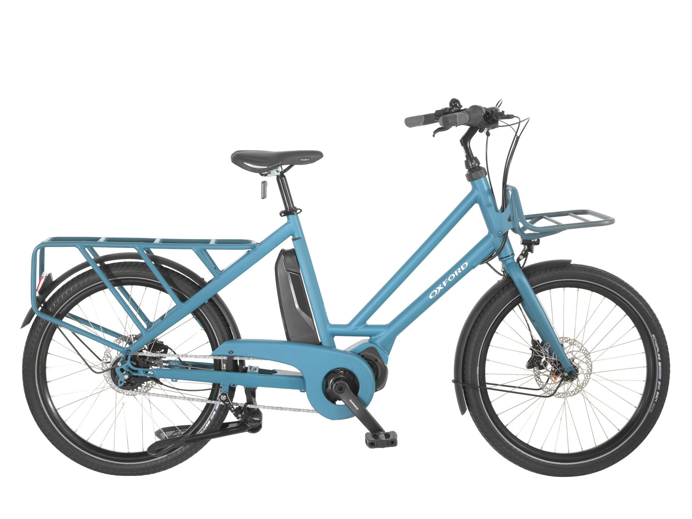

Op voorraad · Cargofiets
Oxford Cargobike Nexus 5
Met de Oxford cargobike heeft u alle ruimte voor uw boodschappen of om kinderen mee te nemen. Een echte fietsende duizendpoot voor in de stad tegen een verrassend scherpe prijs.
- Shimano STEPS E6100 middenmotor
- Stevige bak met comfortabele zitbank
- Nexus 5-speed versnellingsnaaf
Prijs: € 3.175,00
Vraag een proefrit aan